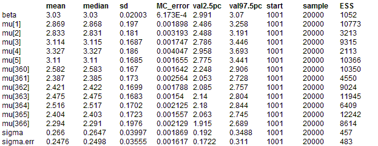
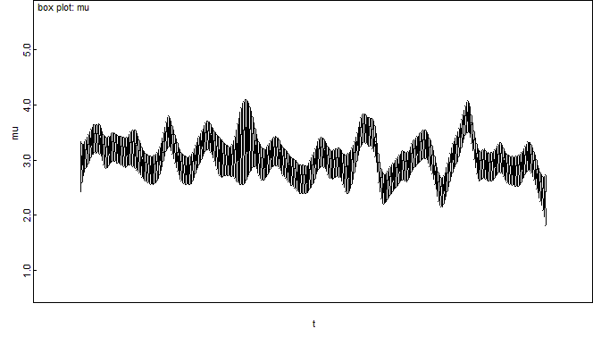

Random walk priors for temporal smoothing of daily air pollution estimates
Shaddick and Wakefield (2002) consider spatiotemporal modelling of daily ambient air pollution at a number of monitoring sites in London. Here we take a subset of their data on a single pollutant measured at one site for 366 days, and model temporal autocorrelation using a random walk prior.
Conditional on the underlying mean concentration
μt on day t, the likelihood for the observed pollution concetration Y
t is assumed to be independent Normal i.e.
Y
t ~ Normal(
μt,
τerr) where 1/
τerr is the measurement error variance
μt =
β +
θt where
β is the overall mean pollution concentration at the site, and
θt is a (zero mean) random error term representing daily fluctuations about this mean. To reflect the prior belief that these daily fluctuations are correlated, a
random walk prior is assumed for
θ =
{θ1 , ......,
θ366 } (see equation 7 in Shaddick and Wakefield):
θt |
θ-t ~ Normal
( θt+1,
φ ) for t = 1
~ Normal
( (θt-1 + θt+1)/2,
φ / 2 ) for t = 2, ...., T-1
~ Normal
( θt-1,
φ ) for t = T
where
θ-t denotes all elements of
θexcept the
θt. This prior may be specified in WinBUGS 1.4 using the
car.normal distribution, with adjacency vector
adj[] listing neighbouring time points (i.e. (t-1) and (t+1) are neighbours of time point t), corresponding weight vector
weight[] set to a sequence of 1's, and vector giving the number of neighbours,
num[], set to 2 for all time points except
num[1] and
num[T] which are set to 1.
The RW(1) reflects prior beliefs about smoothness of first differences, i.e. sudden jumps between consecutive values of
θ are unlikely. Alternatively, we may assume a second order random walk prior RW(2) for
θ , which represents prior beliefs that the rate of change (gradient) of
θ is smooth:
θt |
θ-t ~ Normal
( 2
θt+1 - θt+2,
φ ) for t = 1
~ Normal
( (2
θt-1 + 4
θt+1 - θt+2) / 5,
φ / 5 ) for t = 2
~ Normal
( (-θt-2 + 4
θt-1 + 4
θt+1 - θt+2) / 6,
φ / 6 ) for t = 3, ...., T - 2
~ Normal
( (-θt-2 + 4θt-1 + 2
θt+1) / 5,
φ / 5 ) for t = T -1
~ Normal
( -θt-2+ 2
θt-1,
φ ) for t = T
Again this may be specified using the
car.normal distribution in OpenBUGS via appropriate specification of the
adj[],
weight[] and
num[] vectors.
The model code for fitting these two models is given below.
Modelmodel {
#likelihood
for(t in 1:T) {
y[t] ~ dnorm(mu[t], tau.err)
mu[t] <- beta + theta[t]
}
# prior for temporal effects
# RW prior for theta[t] - specified using car.normal with
#neighbours (t-1) and (t+1)
# for theta[2],....,theta[T-1], and neighbours (t+1) for
#theta[1] and (t-1) for theta[T]
theta[1:T] ~ car.normal(adj[], weights[], num[], tau)
beta ~ dflat()
# Specify weight matrix and adjacency matrix corresponding to RW(1) prior
# (Note - this could be given in the data file instead)
for(t in 1:1) {
weights[t] <- 1;
adj[t] <- t+1;
num[t] <- 1
}
for(t in 2:(T-1)) {
weights[2+(t-2)*2] <- 1;
adj[2+(t-2)*2] <- t-1
weights[3+(t-2)*2] <- 1;
adj[3+(t-2)*2] <- t+1;
num[t] <- 2
}
for(t in T:T) {
weights[(T-2)*2 + 2] <- 1;
adj[(T-2)*2 + 2] <- t-1;
num[t] <- 1
}
# Alternatively, a weight matrix and adjacency matrix
#corresponding to RW(2) prior can
# be specified or given in the data file
#(note, no need to change the prior distribution
# on theta, just the weights/adjacencies)
# for(t in 1:1) {
# weights[t] <- 2; adj[t] <- t+1
# weights[t+1] <- -1; adj[t+1] <- t+2; num[t] <- 2
# }
# for(t in 2:2) {
# weights[t+1] <- 2; adj[t+1] <- t-1
# weights[t+2] <- 4; adj[t+2] <- t+1
# weights[t+3] <- -1; adj[t+3] <- t+2; num[t] <- 3
# }
#for(t in 3:(T-2)) {
# weights[6+(t-3)*4] <- -1; adj[6+(t-3)*4] <- t-2
# weights[7+(t-3)*4] <- 4; adj[7+(t-3)*4] <- t-1
# weights[8+(t-3)*4] <- 4; adj[8+(t-3)*4] <- t+1
# weights[9+(t-3)*4] <- -1; adj[9+(t-3)*4] <- t+2; num[t] <- 4
# }
# for(t in (T-1):(T-1)) {
# weights[(T-4)*4 + 6] <- 2; adj[(T-4)*4 + 6] <- t+1
# weights[(T-4)*4 + 7] <- 4; adj[(T-4)*4 + 7] <- t-1
# weights[(T-4)*4 + 8] <- -1; adj[(T-4)*4 + 8] <- t-2; num[t] <- 3
# }
# for(t in T:T) {
# weights[(T-4)*4 + 9] <- 2; adj[(T-4)*4 + 9] <- t-1
# weights[(T-4)*4 + 10] <- -1; adj[(T-4)*4 + 10] <- t-2; num[t] <- 2
# }
# other priors
tau.err ~ dgamma(0.01, 0.01) # measurement error precision
sigma.err <- 1 / sqrt(tau.err)
sigma2.err <- 1/tau.err
tau ~ dgamma(0.01, 0.01) # random walk precision
sigma <- 1 / sqrt(tau)
sigma2 <- 1/tau
sum <- sum(theta[])
# include this variable to use in time series (model fit) plot
for(t in 1:T) { day[t] <- t }
}
Note that pollution concentrations were not measured every day. However it is necessary to include days with no measurements as missing values (NA) in the data set, otherwise the temporal neighbourhood structure cannot be specified correctly.
Data
list(T=366, y = c(2.89037175789616, 2.56494935746154, 3.17805383034795,
3.68887945411394, 3.13549421592915, 2.484906649788, 3.13549421592915,
3.04452243772342, 3.43398720448515, 3.52636052461616, 3.63758615972639,
4.21950770517611, 1.94591014905531, 3.09104245335832, 3.98898404656427,
4.02535169073515, 4.07753744390572, 3.13549421592915, 2.07944154167984,
2.94443897916644, NA, 2.89037175789616, 3.09104245335832, 3.04452243772342,
3.52636052461616, 3.78418963391826, 3.3322045101752, 3.46573590279973,
2.94443897916644, 2.89037175789616, 3.09104245335832, 3.36729582998647,
3.40119738166216, 3.13549421592915, 3.29583686600433, 2.56494935746154,
3.09104245335832, 2.83321334405622, 3.55534806148941, 3.36729582998647,
3.3322045101752, NA, NA, NA, NA, 3.43398720448515, 3.17805383034795,
2.89037175789616, 2.77258872223978, 2.484906649788, 2.99573227355399,
3.04452243772342, 3.04452243772342, 2.77258872223978, 2.77258872223978,
2.77258872223978, 2.83321334405622, 2.70805020110221, 3.04452243772342,
3.13549421592915, 2.56494935746154, 2.56494935746154, 2.94443897916644,
3.36729582998647, 2.56494935746154, 3.04452243772342, 3.2188758248682,
3.58351893845611, 4.02535169073515, 4.06044301054642, 3.73766961828337,
3.78418963391826, 2.83321334405622, 3.09104245335832, 3.09104245335832,
3.17805383034795, 3.40119738166216, 2.63905732961526, 2.56494935746154,
2.89037175789616, 2.89037175789616, 3.13549421592915, 2.484906649788,
2.89037175789616, 3.13549421592915, 2.89037175789616, 2.63905732961526,
2.39789527279837, 2.83321334405622, 2.70805020110221, 3.09104245335832,
3.40119738166216, 3.68887945411394, 3.04452243772342, 2.94443897916644,
3.13549421592915, 2.94443897916644, 3.25809653802148, 3.55534806148941,
4.02535169073515, 3.71357206670431, 3.36729582998647, 3.3322045101752,
3.36729582998647, 3.29583686600433, 3.13549421592915, 3.29583686600433,
2.89037175789616, NA, NA, NA, NA, 2.77258872223978, 2.99573227355399,
3.40119738166216, 3.3322045101752, 2.63905732961526, 2.89037175789616,
2.83321334405622, 2.77258872223978, 3.2188758248682, 3.09104245335832,
NA, NA, NA, NA, NA, NA, NA, NA, NA, NA, NA, NA, NA, NA, 3.63758615972639,
3.71357206670431, 2.89037175789616, 2.77258872223978, NA, NA,
2.83321334405622, 2.77258872223978, 2.77258872223978, 2.94443897916644,
2.94443897916644, 2.83321334405622, 2.99573227355399, 3.36729582998647,
3.36729582998647, 3.09104245335832, 3.09104245335832, 3.13549421592915,
3.17805383034795, 3.36729582998647, 3.66356164612965, 2.83321334405622,
2.39789527279837, 2.77258872223978, 2.83321334405622, 3.66356164612965,
3.2188758248682, 2.39789527279837, 2.56494935746154, 2.70805020110221,
2.70805020110221, 3.09104245335832, 2.83321334405622, 2.99573227355399,
2.56494935746154, 2.56494935746154, 2.39789527279837, 2.484906649788,
2.99573227355399, 3.04452243772342, 2.39789527279837, 2.70805020110221,
2.07944154167984, 2.77258872223978, 2.99573227355399, 2.94443897916644,
2.77258872223978, 2.19722457733622, NA, 3.04452243772342, 3.46573590279973,
3.17805383034795, 3.04452243772342, 3.36729582998647, 3.2188758248682,
2.99573227355399, 3.55534806148941, 3.2188758248682, 2.70805020110221,
2.63905732961526, 2.83321334405622, 2.63905732961526, 2.70805020110221,
2.99573227355399, 3.13549421592915, 2.89037175789616, 2.99573227355399,
3.2188758248682, 3.43398720448515, 3.13549421592915, 2.63905732961526,
2.70805020110221, 2.19722457733622, NA, NA, NA, NA, 3.04452243772342,
2.63905732961526, 2.89037175789616, 3.04452243772342, 3.13549421592915,
3.55534806148941, 3.49650756146648, 3.76120011569356, 3.55534806148941,
3.89182029811063, 4.12713438504509, 3.52636052461616, 2.70805020110221,
2.94443897916644, 3.46573590279973, 3.49650756146648, 3.61091791264422,
3.85014760171006, 3.97029191355212, 4.02535169073515, 3.52636052461616,
2.30258509299405, 2.07944154167984, 1.94591014905531, 1.94591014905531,
2.19722457733622, 2.77258872223978, 2.484906649788, 2.83321334405622,
2.63905732961526, 2.83321334405622, 2.83321334405622, 2.56494935746154,
2.56494935746154, 2.83321334405622, 2.83321334405622, 2.56494935746154,
2.63905732961526, 2.89037175789616, 3.04452243772342, 3.66356164612965,
3.55534806148941, 2.07944154167984, 2.39789527279837, 2.56494935746154,
2.70805020110221, 2.94443897916644, 3.36729582998647, 3.76120011569356,
3.04452243772342, 2.89037175789616, 3.04452243772342, 3.3322045101752,
3.13549421592915, 2.94443897916644, 3.25809653802148, 3.3322045101752,
3.40119738166216, 3.29583686600433, 3.78418963391826, 3.36729582998647,
2.39789527279837, 3.17805383034795, 3.36729582998647, 2.99573227355399,
2.83321334405622, 3.40119738166216, 2.07944154167984, 2.30258509299405,
2.30258509299405, 2.19722457733622, 2.19722457733622, 2.19722457733622,
2.484906649788, 2.89037175789616, 2.56494935746154, 2.89037175789616,
2.70805020110221, 3.3322045101752, 3.61091791264422, 2.99573227355399,
2.99573227355399, 3.29583686600433, 2.77258872223978, 2.94443897916644,
3.58351893845611, 3.71357206670431, 3.2188758248682, 2.99573227355399,
3.87120101090789, 4.23410650459726, 4.04305126783455, 4.29045944114839,
4.52178857704904, 3.52636052461616, 3.3322045101752, 2.89037175789616,
2.77258872223978, 3.25809653802148, 2.484906649788, 1.94591014905531,
2.39789527279837, 3.43398720448515, 3.66356164612965, 3.52636052461616,
3.13549421592915, 2.30258509299405, 2.63905732961526, 2.94443897916644,
2.89037175789616, 2.89037175789616, 2.77258872223978, 2.63905732961526,
3.13549421592915, 2.56494935746154, 2.94443897916644, 3.63758615972639,
3.8286413964891, 3.25809653802148, 2.63905732961526, 2.39789527279837,
2.484906649788, 3.29583686600433, 2.56494935746154, 2.77258872223978,
2.77258872223978, 3.04452243772342, 2.77258872223978, 2.89037175789616,
2.89037175789616, 2.63905732961526, NA, 2.56494935746154, 2.70805020110221,
3.09104245335832, 2.89037175789616, 2.63905732961526, 3.13549421592915,
3.46573590279973, 3.13549421592915, 3.25809653802148, 3.17805383034795,
2.63905732961526, 3.43398720448515, 2.70805020110221, 2.484906649788,
2.70805020110221, 2.19722457733622, 2.39789527279837, 2.484906649788,
2.63905732961526, 2.39789527279837, 2.19722457733622))
Inits for chain 1
list(beta = 2, tau.err=1, tau=0.1)
Inits for chain 2
list(beta = 0.2, tau.err=0.1, tau=1)
Plus click on
gen inits to generate initial values for the missing data
ResultsRW(1) prior:

Plot of posterior median (red line) and posterior 95% intervals (dashed blue lines) for mu[t] (the true mean daily pollutant concentration), with observed concentrations shown as black dots. (This plot was produced by selecting the
model fit option from the
Compare menu (available from the
Inference menu), with
mu specified as the
node,
day as the
axis and
y as
other). Note that the dashed blue line shows the posterior 95% interval for the estimated mean daily concentration, and is not a predictive interval - hence we would not necessarily expect all of the observed data points to lie within the interval.
Equivalent plot assuming an RW(2) prior. Note the greater amount of smoothing imposed by this prior:
